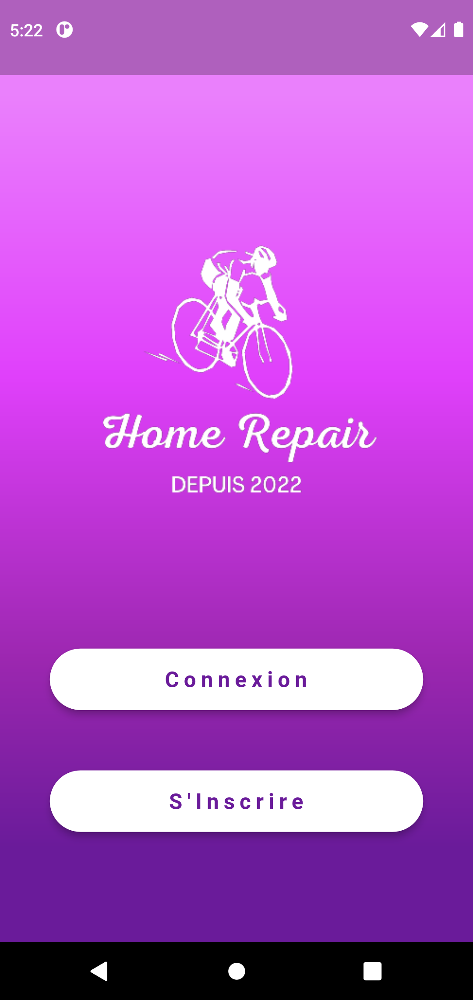

A PROPOS DE MOI
Je m'appelle Fabrice, j'ai 20 ans et je suis actuellement en deuxième année de BTS SIO OPTION SLAM à INGETIS PARIS. Ce portfolio a pour but de vous présenter mes travaux et mon parcours dans la programmation et le developpement. Issu d'un Bac STMG, je me suis orienté vers l'informatique grâce à un proche de ma famille. Durant ces deux années de mon BTS, j'ai decouvert le programmation, ayant plus de facilité et de compréhension avec le code, j'ai choisi par la suite de me diriger vers l'option SLAM.compétences
EXPéRIENCES REALISéeS EN ENTREPRISES

CHARTE INFORMATIQUE

SCHEMA RESEAU DU LABORATOIRE

MODE D'EMPLOI DU FORMULAIRE

NETTOYAGE PC
EXPéRIENCES personnelles

CV en Ligne
Réalisé en 1ere année de formation
Codé en Html&Css

PORTFOLIO
Réalisé en formation
Codé en Html&Css | Javascript

APPLICATION MOBILE
HOME REPAIR
Mise en place d'une application mobile permettant de consulter des prestations de reparation de vélo
Codé en Dart | Flutter | Firebase

SITE WEB
HOME REPAIR
Mise en place d'un site web permettant de consulter des prestations de reparation de vélo
Codé en Html&Css | Javascript | Php | Mysql